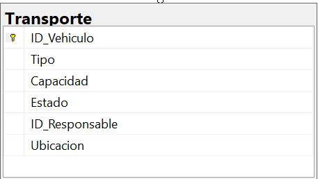
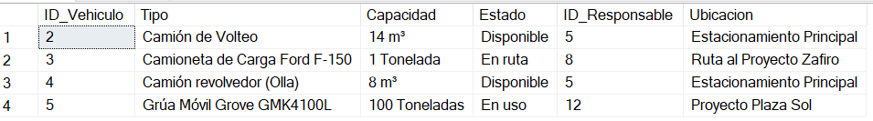

Imagen de la Tabla de Transporte

Pertinencia de la Arquitectura de la Base de Datos
La arquitectura de la base de datos de Transporte es pertinente porque organiza y centraliza la información de los vehículos y su estado. Esto facilita la administración de la flota, asegurando que los recursos estén disponibles y en condiciones para los proyectos.
Propósito
Su propósito es gestionar de forma eficiente los vehículos de transporte de materiales y maquinaria, incluyendo disponibilidad, estado y responsables asignados.
Campos de la Tabla
- ID_Vehiculo: Identificador único del vehículo.
- Tipo: Tipo de vehículo (camión, grúa, camioneta).
- Capacidad: Capacidad de carga.
- Estado: Condición actual (operativo, mantenimiento, fuera de servicio).
- ID_Responsable: Persona encargada del vehículo.
- Ubicacion: Lugar donde se encuentra el vehículo.
Normalización
1NF:
Todos los valores son atómicos, sin listas en un solo campo.
2NF:
Todos los campos dependen de la clave primaria (ID_Vehiculo).
3NF:
No hay dependencias transitivas; información del responsable puede normalizarse en otra tabla.
Código SQL para Crear la Tabla
CREATE TABLE Transporte (
ID_Vehiculo INT PRIMARY KEY IDENTITY(1,1),
Tipo NVARCHAR(100),
Capacidad NVARCHAR(100),
Estado NVARCHAR(50),
ID_Responsable INT,
Ubicacion NVARCHAR(255),
CONSTRAINT FK_Transporte_Responsable FOREIGN KEY (ID_Responsable) REFERENCES Trabajadores(ID_Trabajador) ON DELETE SET NULL
);
GO
Código SQL para Insertar Registros
INSERT INTO Transporte (Tipo, Capacidad, Estado, ID_Responsable, Ubicacion)
VALUES
('Camión de Volteo', '14 m³', 'Disponible', 5, 'Estacionamiento Principal'),
('Camioneta de Carga Ford F-150', '1 Tonelada', 'En ruta', 8, 'Ruta al Proyecto Zafiro'),
('Camión revolvedor (Olla)', '8 m³', 'Disponible', 5, 'Estacionamiento Principal'),
('Grúa Móvil Grove GMK4100L', '100 Toneladas', 'En uso', 12, 'Proyecto Plaza Sol');
GO
Imagen de la Tabla de Transporte
